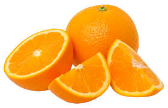

DESCRIPTION OF ORANGE

Orange—whole, halved, and peeled segment
The orange, also called sweet orange to
distinguish it from the bitter orange (Citrus ×
aurantium), is the fruit of a tree in the family
Rutaceae. Botanically, this is the hybrid Citrus ×
sinensis, between the pomelo (Citrus maxima) and
the mandarin orange (Citrus reticulata).
The chloroplast genome, and therefore the maternal
line, is that of pomelo. Hybrids of the sweet
orange form later types of mandarin and the
grapefruit. The sweet orange has had its full
genome sequenced.